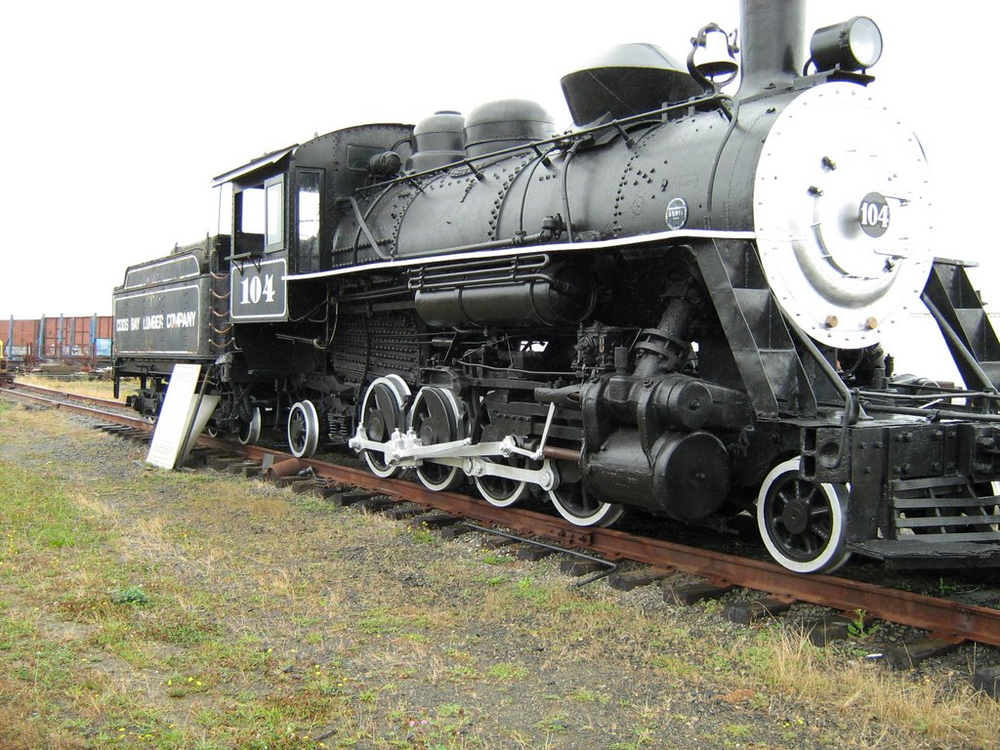

Last updated: 25 June, 2015
| Builder: | Baldwin Locomotive Works |
| Build #: | 55911 |
| Date: | Dec., 1922 |
| Engine #: | 104 |
| Class: | |
| Gauge: | 4'-8½" |
| F.M.Whyte: | 2-8-2 |
| Drivers: | 44 |
| Gear Ratio: | |
| Tractive Effort: | 27,800 |
| Weight: | 144,550 |
| Length: | |
| Boiler: | |
| Cylinders: | 18 x 24 |
| Top Speed: | Fuel: |
| Fuel Type: | Oil |
| Water: | |
| Steam psi: | 185 |
| Railroad: | Georgia Pacific (Coos Bay Lumber Company) |
| Website: | Oregon Coast Historical Railroad |
| Location: | Oregon Coast Historical Railway Museum 766 S 1st St Coos Bay, OR 97420 541-297-6130 |
| Google Earth: | 43.36178,-124.211949 |
| Status: | Restoration |
| Notes: | Came from North Bend. Weight on Drivers: 115,300 |
Built in December 1922 by Baldwin Locomotive Works in Philadelphia, PA, steam locomotive No. 104 was delivered in the spring of 1923 to the Coos Bay Lumber Company and put to work hauling open cars of newly-hewn logs in the forests of Coos County.
By the time the locomotive was retired in 1954, it was the last steam engine in use in the local woods, pulling cars from the mountain town of Powers to the company's McCormack log dump on Isthmus Slough, a few miles from their Coos Bay mill. It also hauled logs from Fairview to Coquille and then on to Coos Bay.
An average train was 40 to 50 cars, but when crossing what trainmen called Overland, the section between Coquille Valley and the head of Isthmus Slough, the increased grade required that half the train be sidetracked. After the first half was taken over, the engine returned for the remaining cars.
In areas where steep grades were not an issue, it wasn't unusual for the locomotive to pull as many as 100 fully-loaded flatcars. The 2-8-2 Mikado-style locomotive was the first oil-burning steam engine owned by Coos Bay Lumber Company. Weighing in at 73 tons, it was equipped with a superheater, providing more traction but also making the locomotive more slippery. The tendency for the wheels to spin required the use of more sand than the standard sand dome held, so the company fabricated a larger dome at their Powers shop.
The locomotive is equipped with 44-inch drivers and 18-inch by 24-inch cylinders, with air brakes on all drivers and tender wheels. It's 36 feet long and its tender is 25 feet long, with a 1000 gallon fuel capacity and a 2,000 gallon water capacity.
When diesels replaced the mainline steam locomotives in 1954, the No. 104 was used as a standby engine. In 1956 Coos Bay Lumber Company's mill and logging operations were sold to Georgia Pacific Corp., and the following year No. 104 was sent up the coast to the company's Toledo, Oregon operations.
The locomotive became GP No. 3 until it was donated to the Coos-Curry Museum in North Bend in September, 1960. According to a Sept 22, 1960 article in the North Bend News, the engine was one of five donated to Pacific Northwest communities. A GP official named Charles Corrigan is quoted as saying "we would have brought her here under her own power, but she hasn't had steam up for some time." The article says "a tractor hauled the iron monster up the steep grade over temporary tracks laid by the GP railroad crew."
The museum group, later called the Coos County Historical Society, cared for the locomotive for the following 33 years. The engine and tender became a welcome fixture at the northern entrance to North Bend. A cyclone fence kept people off the locomotive, and a large wooden structure protected it from the elements. A sound system was installed, and visitors could push a button to play a recording of No.104's whistle. The Oregon Coast chapter of the National Railway Historical Society was formed and incorporated in 1982 by a small group of local railroad enthusiasts. The group's plan at that time was to acquire and restore No. 104 and operate an excursion between Coos Bay and Coquille.
The group conducted a hydrostatic test of the locomotive to determine the boiler's ability to hold pressure. They also acquired a caboose (the former Southern Pacific No. 1179) and restored it. The group's excursion plans fell through, however, when an agreement between Southern Pacific and the Historical Society could not be reached as to ownership of the locomotive and operating rights on the track. The caboose was sold to The Caboose Lady coffee shop in Coquille. It changed hands again in 2007, and was moved to its current home at the KOA campground in Hauser, north of the Bay Area.
Over the years, the railroad group remained fairly inactive, but continued to hold meetings and share rail interests. New members in the mid 1990s took renewed interest in restoring No. 104 and possibly offering excursions. Meantime, the Coos County Historical Society began planning to build a new museum in Coos Bay. It was felt that the new facility would not have room to accommodate the steam locomotive, and that the railroad group could help continue the long-term preservation of No. 104
As a result, on October 29, 1999, the Historical Society turned over No. 104 to the railroad group. The Historical Society retains an overview interest in No. 104 should the railroad group falter in its mission to preserve the locomotive.
Members continued restoration of the engine and explored the possibility of offering excursions. Many of the engine's external elements were removed, including the headlight, smokestack, sand dome, steam dome, saddle tanks, oil pump, dozens of feet of tubing, and perhaps most significantly, the cab, which was extensively rusted. Some parts were rusted beyond repair, and were refabricated.
Meantime, in 2000, the City of Coos Bay used Urban Renewal funds to purchase a parcel of property along US 101 for a new home for engine No. 104 and the railway group. Members and volunteers, helped by employees of the Central Oregon and Pacific Railroad, installed a short stretch of railroad tracks onto which the locomotive and tender could be placed.
With the use of two donated 75-ton cranes and an 80-wheel lowboy trailer, the tender and locomotive were trucked from North Bend to Coos Bay in May 2001. The move briefly shut down portions of US 101 and required a virtual parade of fire trucks, police cars and support vehicles to clear the way. The new location provided more room to continue renovation of the locomotive. With many of its elements removed, No.104 resembled a boiler on wheels. The time had come to see if it could be brought up to steam again. Ultrasound tests were performed on different parts of the boiler to determine its structural integrity, and the results were encouraging. The boilerplate was found to be sufficiently thick in most places, and rust damage was largely superficial. A general conclusion from the tests suggests that if the engine were to run again, about 18 percent of the inside lower boiler area would need to be rebuilt.
The prospects for operating an excursion train, however, were not encouraging. Liability insurance premiums for the operation of steam equipment increased sharply. Tightened federal regulations make it very difficult to run steam engines. More importantly, it's not clear as to whether excursion trains would be allowed on local railroad tracks in the wake of their abandonment by former operator Central Oregon and Pacific Railroad, and the subsequent takeover of the route by the Port of Coos Bay. For the time being, the railroad group tabled excursion plans and devoted itself to restoring No. 104 to historically accurate condition for static display.
Many of the locomotive's external parts have been carefully cleaned, sandblasted, primed and repainted. With steel donated by Weyerhaeuser Corp.'s former North Spit paper plant, a new cab was fabricated and set into place using cranes courtesy of Pacific Power. In addition to steel work, members also painstakingly recreated the interior wooden elements of the cab, even using the same type of wood as in the original version.
A salvaged set of sturdy iron steps was sandblasted and repainted to provide visitor access to the cab, and a steel plate was installed to span the gap between cab and tender as a safety feature. The bell was reinstalled and can be rung. Volunteer Frank Wilcox restored the headlight and the light on the back end of the tender, and rewired them so they can be turned on at night. Member Sam Terzo repainted No. 104 and the tender in the summer of 2007, and plans call for new oval logos - patterned after the original Coos Bay Lumber Co. logo - to be applied to both sides of the tender. Restoration continues on the remaining parts.
The restoration of No. 104 has been one of our group's many projects that benefited greatly from the assistance of local businesses and professionals. Our work would be impossible without the donations of everything from sheet steel to welding rods to black paint, and with many hours of donated labor. In particular, we're indebted to Pacific Power utility crews, who provided such things as a crane to reinstall the cab and posthole diggers for the fence and landscaping.
As noted on our home page, the focus is now on building shelters for the No. 104, its tender, the No. 111 diesel locomotive, and the two cabooses. Engineered plans have been completed but a substantial amount of funds must be raised. The shelter will include an updated interpretive sign and a sound system that features an actual recording of the locomotive's distinctive steam whistle.
Fundraising is now under way for this important next phase in the storied life of Old No. 104. Find out how you can help on the Club and Contact page.